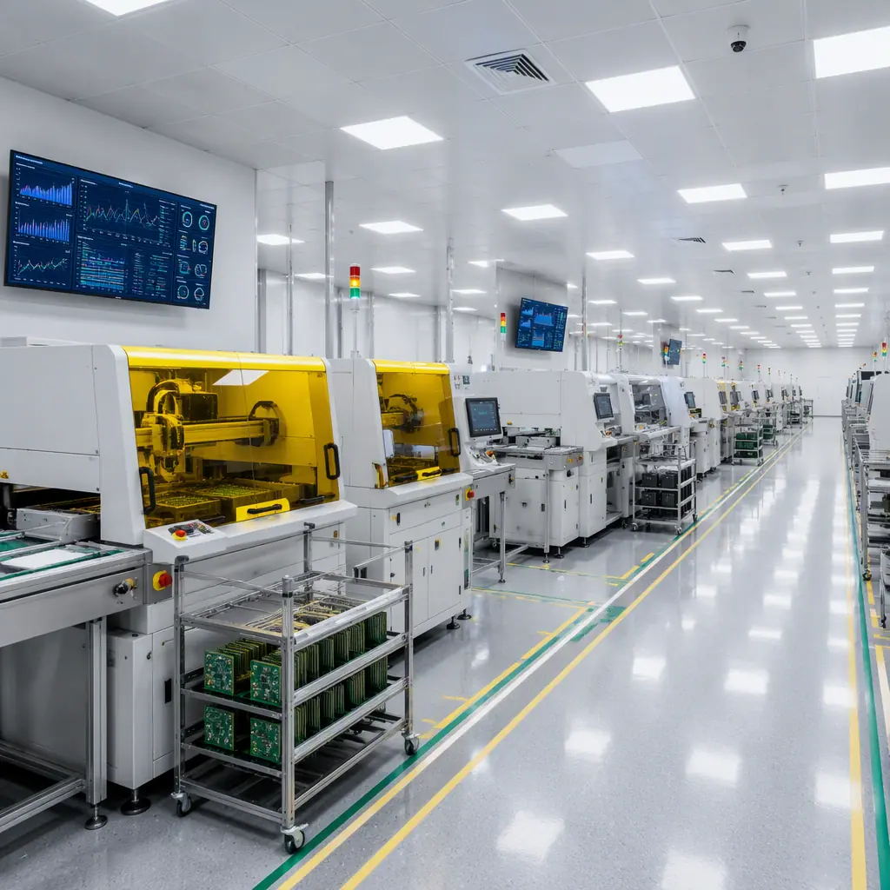

In January 2026, the EU's Corporate Sustainability Reporting Directive (CSRD) expanded to cover thousands of companies that import electronics from Asia. For the first time, a European PCB buyer must report not just their own emissions, but Scope 3 emissions from their entire supply chain — including the PCB factory in Shenzhen. Meanwhile, the Corporate Sustainability Due Diligence Directive (CSDDD) creates legal liability for human rights and environmental violations in your supply chain, even if they occur at a subcontractor you've never visited.
For procurement managers, this changes the PCB sourcing equation. Price, quality, and lead time are still essential — but now you must also verify that your manufacturer meets environmental and social standards that are auditable, documentable, and defensible to regulators and customers. At Huaxing PCBA, our ISO 14001:2015 environmental management system and ISO 9001:2015 quality framework have been audited by European customers for over a decade. Here is the ESG audit framework we recommend every PCB buyer apply to their supply chain.

The Regulatory Landscape: Three Directives Every PCB Importer Must Know
| Regulation | Who It Applies To | What It Requires | Effective Date |
|---|---|---|---|
| EU CSRD | EU companies with €50M+ revenue, 250+ employees; non-EU with €150M+ EU revenue | Annual sustainability report covering Scope 1, 2, and 3 emissions; audited by third party | FY2025 (reporting in 2026) |
| EU CSDDD | EU companies with €450M+ revenue; non-EU with €450M+ EU revenue | Due diligence on human rights and environmental impacts throughout supply chain; liability for failures | Phased from 2027 |
| German LkSG (Supply Chain Act) | German companies with 1,000+ employees (from 2024) | Mandatory human rights and environmental risk analysis; annual reporting to BAFA | Active since 2023 |
Procurement Impact: Even if your company is below CSRD thresholds today, your EU customers are not. They will require you to provide supplier ESG data as part of their own Scope 3 reporting. If you cannot provide audited ESG data on your PCB manufacturer, you risk losing customers who need that data for their own compliance.
The 10-Point ESG Audit Framework for PCB Factories
This framework is adapted from the RBA (Responsible Business Alliance) Code of Conduct — the standard used by Apple, Intel, and other electronics industry leaders for supplier audits — plus EU-specific requirements from CSRD and CSDDD.
Environmental (4 Points)
Wastewater Treatment & Heavy Metal Discharge
PCB manufacturing generates wastewater containing copper, nickel, lead, and tin from etching, plating, and cleaning processes. Verify that the factory has an on-site wastewater treatment plant with continuous pH and heavy metal monitoring. Request discharge permits and the most recent 12 months of third-party lab test results. Red flags: untreated discharge, missing permits, or heavy metal concentrations exceeding GB 8978-1996 Class I standards. Our PCB certifications guide covers environmental standards in detail.
Carbon Emissions Inventory & Energy Source Mix
CSRD requires Scope 3 emissions data. Ask the factory for: annual electricity consumption (kWh), percentage from renewable sources, natural gas/diesel consumption, and any carbon offset purchases. A factory powered by 60%+ coal grid electricity (still common in parts of China) will dramatically increase your product's carbon footprint versus one in a region with higher renewable penetration or on-site solar generation. Request the factory's energy bills for the most recent quarter — not just a statement of policy.
Chemical Management & Hazardous Waste Disposal
PCB processes use dozens of hazardous chemicals: etchants (ferric chloride, cupric chloride), plating solutions (cyanide-based gold, nickel sulfate), solvents (isopropyl alcohol, acetone), and photoresist developers. Verify: SDS (Safety Data Sheets) available in local language for every chemical on-site, proper secondary containment for all chemical storage, licensed hazardous waste disposal contractor with auditable chain-of-custody documentation, and air emissions treatment (scrubbers for acid fumes, VOC control for solvent processes). See our halogen-free compliance guide for specific substance restrictions.
ISO 14001 Certification & Continuous Improvement
ISO 14001 is the baseline environmental management standard, but the certificate alone is not sufficient. Verify: certification body is IAF-accredited (not a self-declaration), most recent surveillance audit had zero major non-conformities, the factory can show documented environmental objectives with measurable targets (e.g., "reduce water consumption per m² of PCB produced by 15% year-over-year"), and corrective actions from past audits were closed within the committed timeline. An ISO 14001 certificate with a history of repeat non-conformities is a red flag.
Social (4 Points)
Working Hours, Wages & Overtime Compliance
Chinese labor law limits standard working hours to 8 hours/day, 40 hours/week, with overtime capped at 36 hours/month. In practice, peak production periods in electronics manufacturing often exceed this. Request: payroll records for the most recent 3 months (anonymized), overtime approval records, and evidence that overtime is voluntary and compensated at the legally required premium (150% weekday, 200% weekend). Verify that wages meet or exceed local minimum wage plus overtime premiums. The RBA standard also requires at least one day off per 7-day work period.
Occupational Health & Safety (OHS)
PCB factories have specific OHS risks: chemical exposure (etchants, solvents, plating baths), mechanical hazards (drilling, routing, shearing), thermal hazards (reflow ovens, wave solder), and ergonomic risks (repetitive manual inspection). Verify: PPE availability and enforcement (chemical-resistant gloves, safety glasses, respirators where needed), emergency shower and eyewash stations within 10 seconds travel of chemical areas, documented accident and near-miss tracking with root cause analysis, and ISO 45001 certification or equivalent OHS management system. For quality and safety intersection, see PCB supplier audit checklist.
Forced Labor & Freedom of Employment
This is the highest-risk area for CSDDD liability. Verify: all workers hold their own identity documents (not held by employer), employment contracts are written in the worker's native language, no recruitment fees were charged to workers (fees must be paid by employer), workers are free to resign with reasonable notice (typically 30 days under Chinese labor law), and no prison labor or government-assigned labor is used. RBA audits specifically check for passport retention — a practice that is illegal under Chinese law but persists in some industries. Our remote factory audit guide covers virtual verification techniques.
Discrimination, Harassment & Grievance Mechanisms
Verify the factory has: a written non-discrimination policy covering race, gender, religion, age, disability, sexual orientation, and pregnancy; an anonymous grievance mechanism (suggestion box, hotline, or digital platform) accessible to all workers; records showing grievances are investigated and resolved within defined timeframes; and no evidence of pregnancy testing as a condition of employment (explicitly prohibited by RBA and Chinese law). Gender balance data — percentage of women in management vs. production roles — provides additional insight into equal opportunity practices.
Governance (2 Points)
Supply Chain Transparency & Conflict Minerals Reporting
CSRD and the EU Conflict Minerals Regulation (effective 2021) require importers to conduct due diligence on tin, tantalum, tungsten, and gold (3TG) sourcing. PCB manufacturers consume significant quantities of tin (solder, surface finish) and gold (ENIG/ENEPIG plating). Verify: the factory files an annual CMRT (Conflict Minerals Reporting Template) with the RMI (Responsible Minerals Initiative), smelter/refiner information is traceable to RMI-conformant sources, and the factory can trace 3TG content in solder, gold plating solutions, and copper foil to specific smelters. For full compliance requirements, see our conflict minerals compliance guide.
Anti-Corruption, Business Ethics & Management Systems
Verify the factory has: a written anti-bribery and anti-corruption policy aligned with local law and international standards (e.g., UK Bribery Act, US FCPA), records of ethics training for all employees (not just management), a whistleblower protection policy that explicitly prohibits retaliation, and ISO 37001 certification or equivalent anti-bribery management system. For procurement managers, the practical test is simple: can you get the same price quote regardless of whether you ask through the official sales channel or through a personal connection? Transparency of the quotation process — covered in our PCB quote comparison guide — is itself an ESG indicator.
How to Conduct the Audit: Remote, Third-Party, or On-Site?
The audit method depends on your leverage, budget, and risk tolerance:
| Method | Cost | Depth | Best For |
|---|---|---|---|
| Self-Assessment Questionnaire (SAQ) | $0-500 | Shallow — relies on supplier honesty | Initial screening, low-risk suppliers |
| Remote Audit (video walkthrough) | $1,000-3,000 | Moderate — visual verification, no document spot-checks | Ongoing monitoring, travel-restricted periods |
| Third-Party RBA Audit (e.g., Verité, Elevate) | $5,000-15,000 | Deep — professional auditors, worker interviews, document review | High-risk suppliers, CSDDD compliance evidence |
| On-Site Buyer Audit (your team visits) | $3,000-8,000 (travel) | Deepest — you see what matters to you | Strategic suppliers, new factory qualification |
For most PCB buyers, the practical approach is: SAQ for initial screening, remote audit for annual monitoring, and third-party RBA audit every 2-3 years for CSDDD compliance evidence. On-site visits by your own team provide the best insight — factory culture, worker morale, and housekeeping standards are hard to fake when you're standing on the production floor. Our supplier quality scorecard guide includes ESG metrics alongside quality KPIs.
Pro Tip: If your order volume justifies it, negotiate ESG audit cost-sharing with your PCB manufacturer. Many factories will absorb or split the cost of a third-party audit if it helps them win (and keep) your business. An RBA audit benefits them with other customers too — it's a shared investment in supply chain credibility.
Documentation: What Regulators and Customers Will Ask For
After the audit, maintain a structured evidence package. European customers and regulators will request:
Supplier Code of Conduct — signed by the PCB manufacturer, committing to your company's ESG standards (or RBA Code of Conduct as a recognized alternative).
Audit Report — the full audit report (not just the summary), including non-conformities found, corrective action plans with deadlines, and evidence of closure. A clean audit with zero findings is suspicious — every factory has areas to improve, and honest reporting of non-conformities with documented correction is more credible than a perfect score.
Annual ESG Data — quantified metrics: total energy consumption (MWh), renewable energy percentage, water consumption (m³), waste generated (tonnes) with hazardous waste percentage, Scope 1 and 2 GHG emissions (tCO₂e), total hours worked and injury/illness rates, and 3TG smelter list with RMI conformance status.
Continuous Improvement Evidence — year-over-year trends showing improvement (or at least management attention) on key metrics. A factory that reports the same energy consumption number every year is not measuring — or not improving. Our supply chain risk management guide covers monitoring frameworks.
Red Flags That Should Stop a Sourcing Decision
Some ESG findings are so severe that no price advantage justifies proceeding:
Refusal to allow any form of audit. If a factory won't permit even a remote video walkthrough, they are hiding something. Walk away.
Passport retention or recruitment fee charges. These are forced labor indicators under RBA standards and create direct CSDDD liability for the importer. A single verified case should terminate the supplier relationship. For guidance on supplier transitions, see PCB supplier transition guide.
Untreated wastewater discharge. This is both an environmental crime and a signal that the factory cuts corners on compliance. If they're willing to dump heavy metals into the water supply, what compromises are they making on your PCBs?
Falsified certifications or audit records. Check certification validity directly with the issuing body's online database. ISO certificates can be verified at IAF CertSearch. A fake ISO 14001 certificate is an instant disqualification and should be reported.
At Huaxing PCBA, we welcome customer ESG audits — remote, third-party, or on-site. Our ISO 14001:2015 and ISO 9001:2015 certifications are IAF-accredited and verifiable. Our Shenzhen facility operates on-site wastewater treatment, chemical containment exceeding regulatory requirements, and documented ESG metrics available to all customers. Contact us to schedule an ESG compliance review or request our latest sustainability data package.